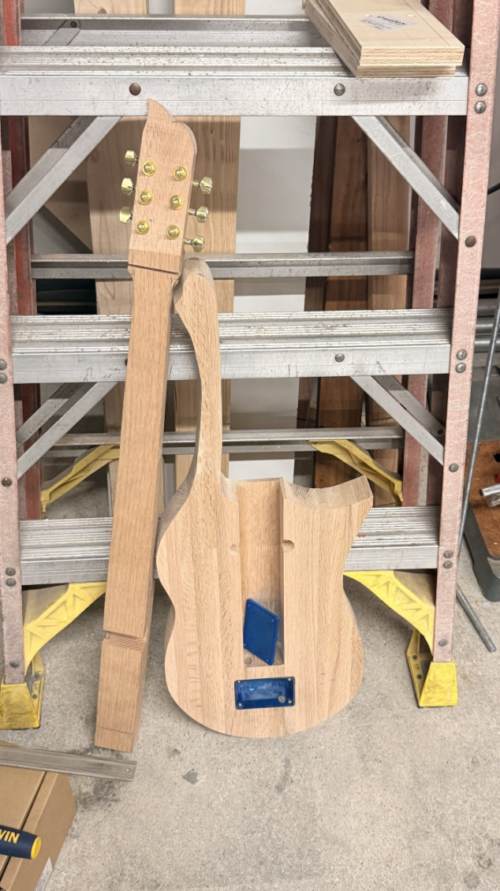
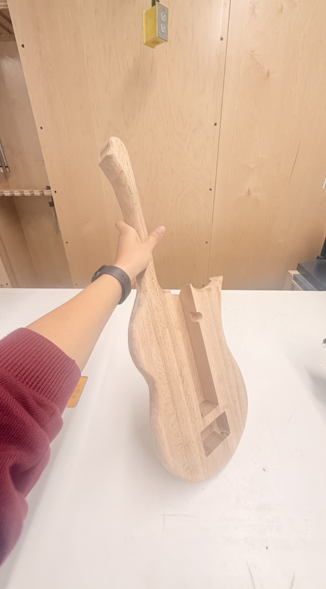
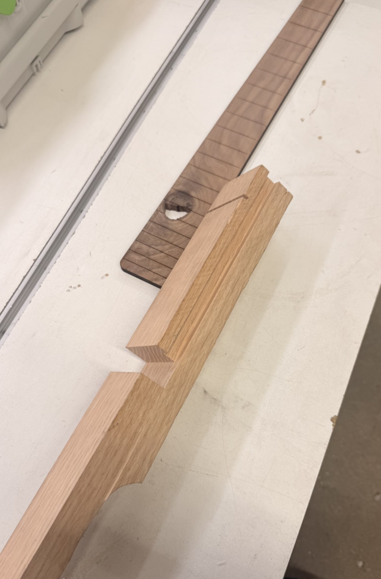
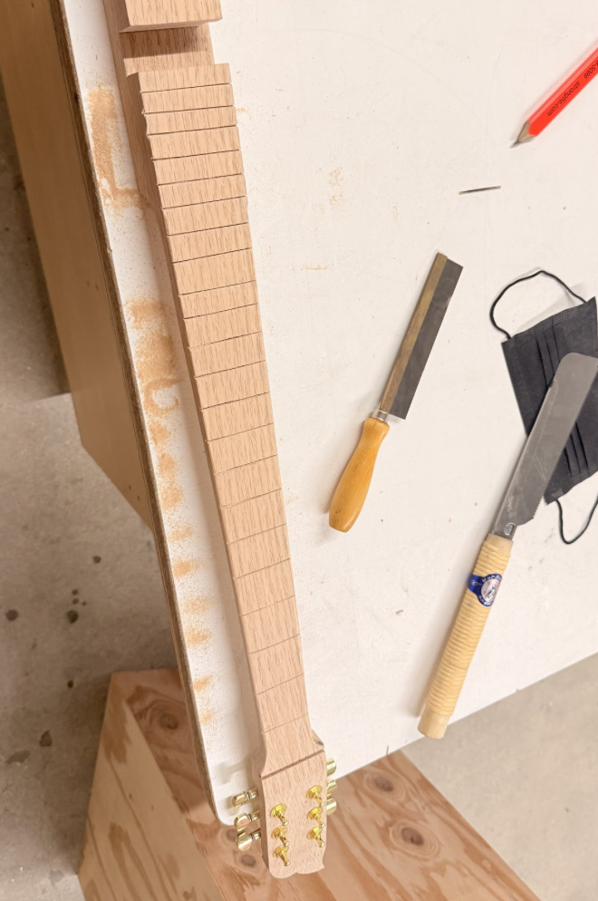
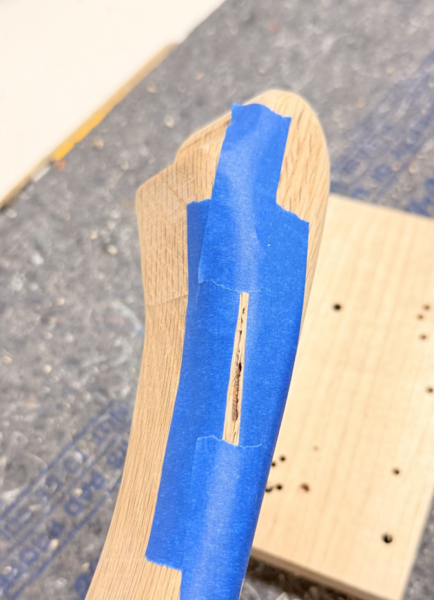
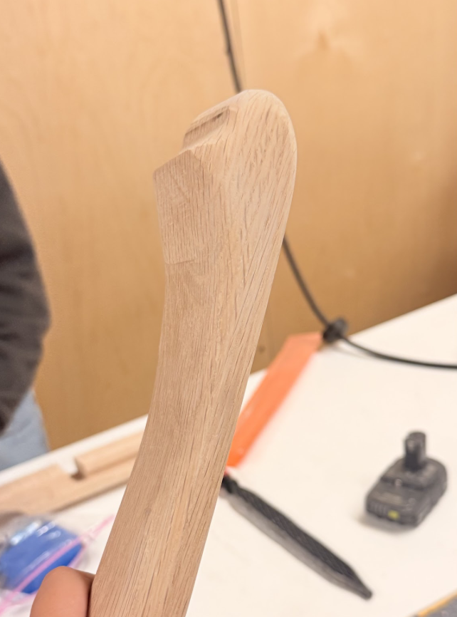
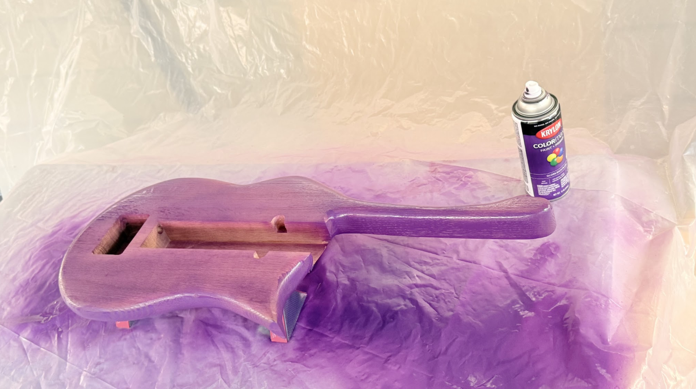
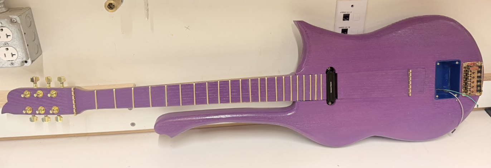
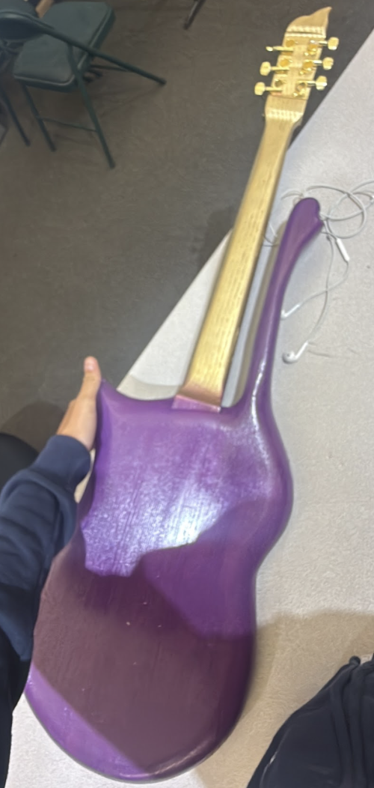
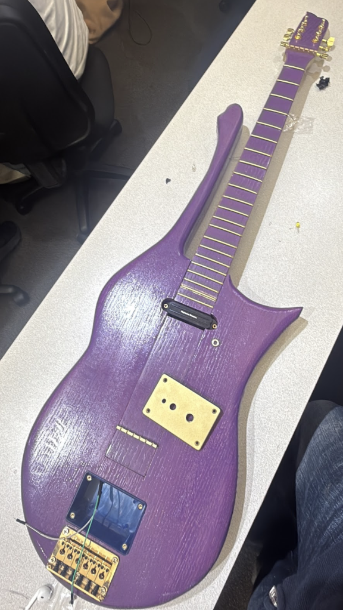

Woodworking · Electronics · EE 202L · Spring 2026
Electric Guitar —
Wood Component
Overview
EE 202L — Linear Circuits — asked us to build a fully functional electric guitar from scratch. The catch: it had to include a custom PCB with a notch filter that specifically suppresses the 196 Hz fundamental of an unfretted G string. So yes, we built a guitar with a built-in personality quirk. I think that's kind of perfect.
The project had two totally intertwined halves: the woodwork (you're reading about it now) and the electronics — filter design, PCB layout in KiCad, soldering, and the whole signal chain. Both happened at the same time, which made everything a little more chaotic and a lot more interesting. This page is about the wood.
Two weeks. 23 pieces of recycled wood. 20 hours of fabrication. $45 in materials. One fully playable purple electric guitar. I would do it again in a heartbeat.
System Architecture
At its core, the guitar is a complete electro-acoustic system. A string vibrates, the pickup converts that vibration into an electrical signal, the signal passes through our notch filter PCB inside the blue box, exits through a jack, and plays out of a speaker. The whole chain lives inside a hand-built wooden body. When it worked for the first time, I may have screamed.
Signal chain from string to speaker. The blue box — notch filter PCB, battery, LED, switch — lives inside the routed body cavity.
Wood Fabrication — The Body
We didn't buy a single piece of wood for this guitar. The entire body came from 23 recycled offcuts left over from other students' guitars in the Maker Space. This was not a glamorous starting point. Each piece had to be cut to the same height and width, jointed on both faces until perfectly flat and straight, then glued and left overnight to cure into a single solid blank.
Once the blank was ready, a bandsaw cut out the overall shape — grain running lengthwise, never across, to avoid the kind of structural failure that would haunt you later. A table router rounded the edges. And the shape? Prince's guitar. That was decided on day one and never questioned.

Early stage — post-bandsaw. Blue rectangles mark cavity and box positions.

Post-table router — rounded edges visible. Body cavity for the blue box roughed out.
Wood Fabrication — The Neck
The neck came as raw stock from class. The headstock needed to be bent and shaped — which immediately ruled out piano tuning pins, since they require a straight headstock. So we switched to proper guitar tuning pegs, which honestly looked better anyway. A channel was routed along the side of the neck to run the pickup cable cleanly into the blue box without it just… dangling across the guitar.
Fret slots were cut entirely by hand using a saw and chisel. The walnut fretboard came pre-slotted, which was a relief, but fitting the neck into the body pocket was its own adventure — multiple rounds of test-fitting, shaving a little here, checking the angle, shaving a little more. You develop patience quickly.

Neck blank and walnut fretboard — checking fit before routing the cable channel.

Fret slots carved by hand, gold tuning pegs installed.
Details, Cracks & Repairs
Sanding is when the wood tells you everything it's been hiding. Cracks appeared that weren't visible before — particularly around the headstock. Each one got filled with a mixture of wood glue and fine sawdust, pressed in, left to cure, and sanded flush until you couldn't tell they were ever there. Multiple people in the Maker Space came over to inspect and sand the body at various points. Every pass revealed something new. This part alone took several hours, and I'm glad it did — rushing it would've shown.

Headstock crack sealed with glue and wood dust, taped while curing.

Neck after final sanding — smooth profile, clean grain.
Painting — Purple & Gold
We were making a Prince guitar. Purple and gold was never a question. Krylon spray paint, multiple coats, the guitar left overnight between sessions to let the wood fully absorb the color. The can ran out halfway through — we had to go buy another one mid-session, which is a very specific kind of stressful.
Every single detail got the gold treatment: frets, nut, screws, the top face of the blue box, and the back of the neck. We found an actual gold bridge with matching gold screws and used that instead of the standard hardware. Then came the drilling — precise holes for the output jack, the LED, and the toggle switch, all sized to fit exactly. Finished weight: approximately 13 lbs. She is not light. She is built.

First coat of Krylon purple — body shape and routed edges clearly visible.

Top view — pickup, blue box, and bridge installed. PCB and battery inside the routed cavity.

Back of body — deep purple finish, gold neck visible.

Completed guitar — purple body, gold hardware, walnut fretboard. The blue box on the right houses the notch filter PCB.
By the Numbers
| Item | Detail |
|---|---|
| Wood pieces recycled | 23 offcuts from other students' guitars |
| Total fabrication time | ~20 hours over two weeks |
| Materials cost | $45 — paint, bridge, tuning pegs, hardware |
| Finished weight | ~13 lbs |
| Color scheme | Purple (Krylon) + Gold — modeled after Prince |
| Tools | Bandsaw, table router, table saw, sander, chisel, hand files |
| Wood species | Red oak (body + neck) · Walnut (fretboard) |
| Course | USC EE 202L — Linear Circuits, Spring 2026 |
| Partner | Braden Ling |
Reflections
I genuinely did not expect to love this project as much as I did. It started as a circuits course and turned into one of the most satisfying things I've built — because you could hold it, play it, and hear it work. There is something different about that. A simulation result on a screen is one thing. A purple guitar that makes noise when you plug it in is another thing entirely.
Using recycled wood was a constraint that became a point of pride. The grain matching, the crack repairs, the hours of sanding — none of that was required by the rubric. But all of it mattered. The guitar got a lot of compliments, which was nice, but more meaningful was the moment I understood that engineering and craft are not separate things. They never were.
The electrical half of this project — designing the 196 Hz twin-T notch filter, laying out the PCB in KiCad, soldering, and testing — is documented separately under Electric Guitar — PCB with 196 Hz Notch Filter.